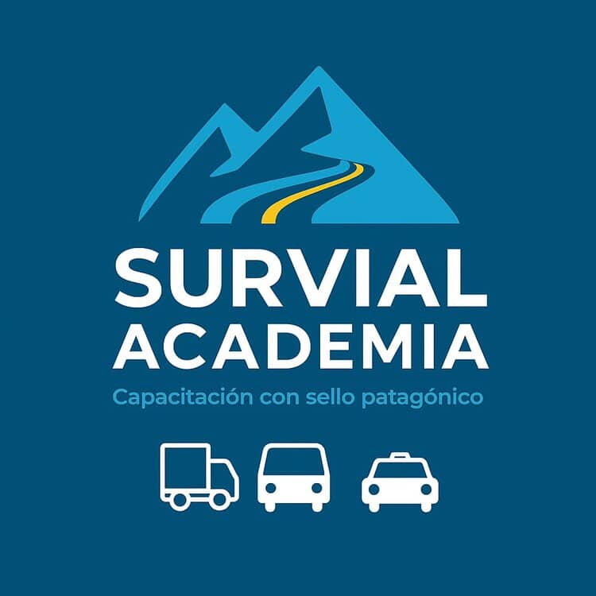
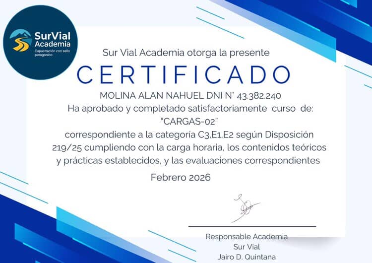
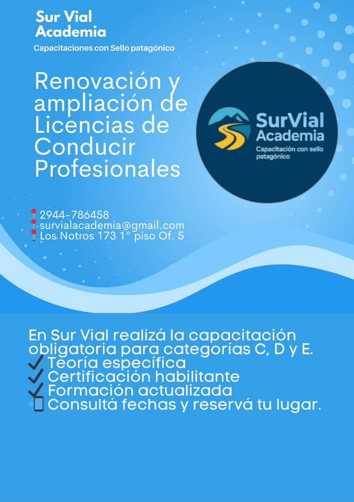
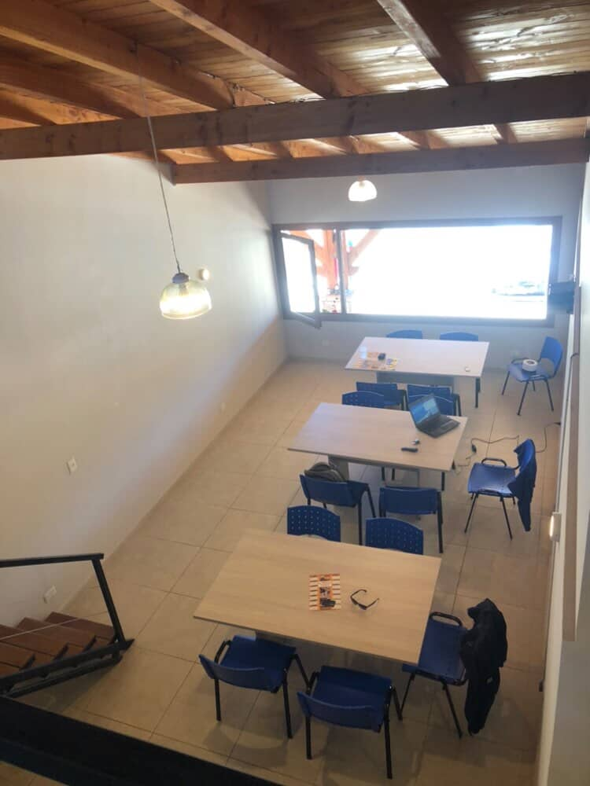
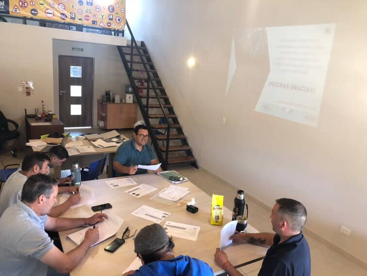
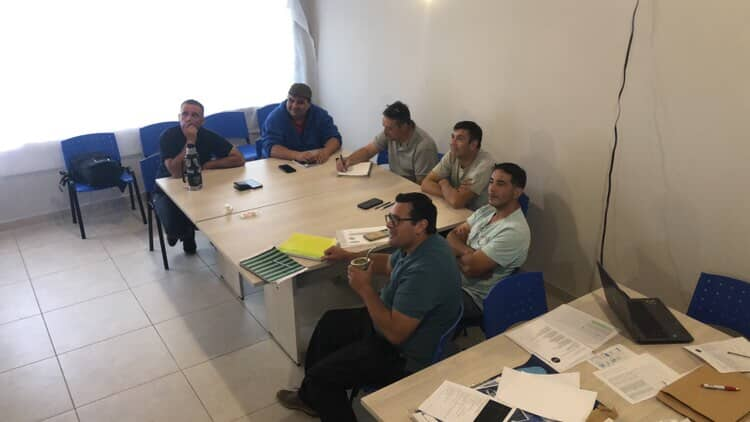
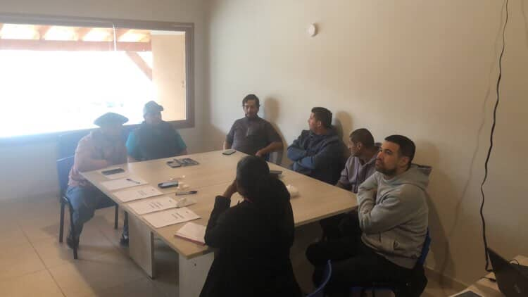
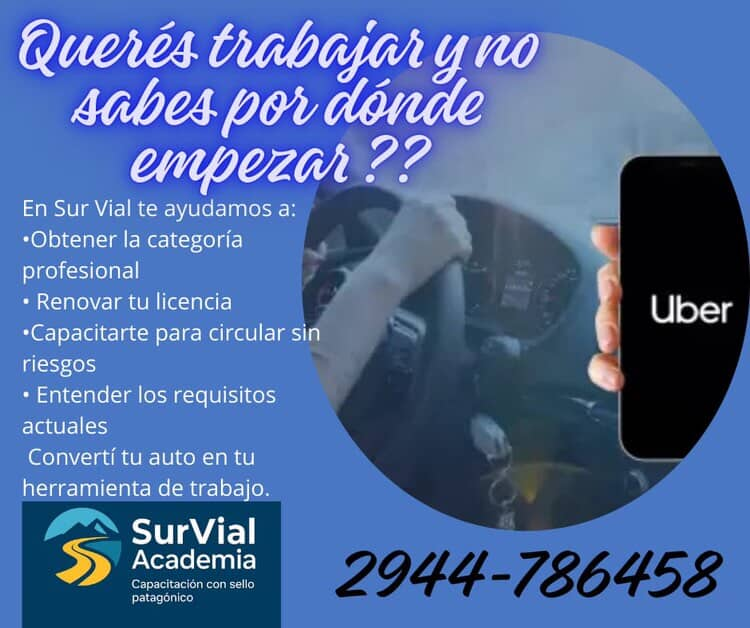
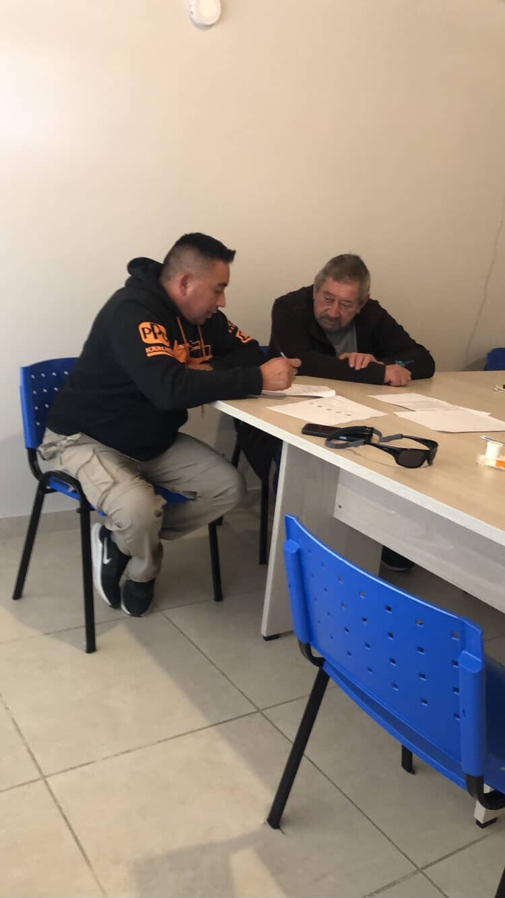
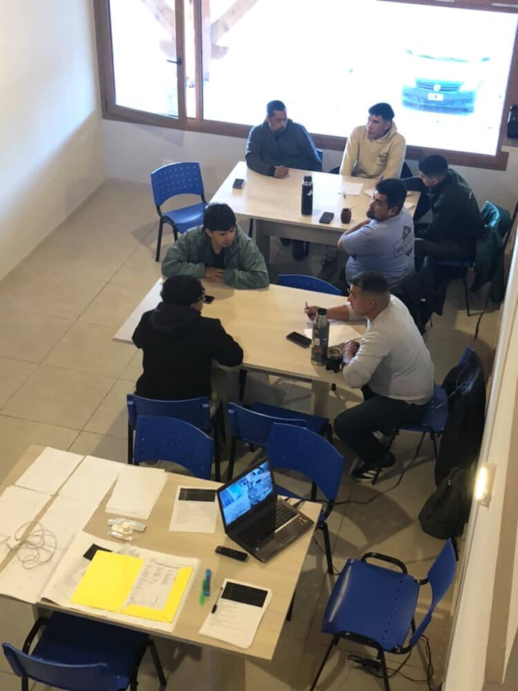

Academia de conductores profesionales
Cursos y capacitaciones para avanzar con tu LNC profesional.
En SurVial Academia organizamos tu camino con una propuesta clara, institucional y profesional para formación inicial, renovación y actualización de conductores profesionales interjurisdiccionales.
- Formación inicial y renovación
- Marco legal actualizado
- Clases para pasajeros y cargas
También te ayudamos desde el inicio del trámite en lncargentina.seguridadvial.gob.ar .


Clases habilitadas
Pasajeros: D1, D2 y D3. Cargas: C1, C2, C3, E1 y E2.
Institucional
Formación profesional con respaldo normativo y presentación institucional clara.
Una sección pensada para transmitir seriedad, habilitación oficial y confianza a quienes necesitan capacitarse como conductores profesionales interjurisdiccionales.
Prestador autorizado
Academia habilitada por la Agencia Nacional de Seguridad Vial.
Somos una Academia habilitada por la Agencia Nacional de Seguridad Vial, que se rige bajo el Decreto 196/2025 y la Disposición 219/2025, como prestador autorizado para dictar capacitaciones destinadas a Conductores Profesionales Interjurisdiccionales.
- Decreto 196/2025
- Disposición 219/2025
- Ley 24.449
- Ley 26.363
Cursos / Capacitaciones
Programas principales organizados según tu etapa profesional.
Separamos la información para que puedas identificar rápido qué programa necesitás y qué incluye cada instancia de capacitación.
Para quienes desean obtener por primera vez la LNC profesional.
Programa orientado a conductores que inician su camino profesional y necesitan una base teórica y práctica ordenada.
- Formación teórica y práctica
- 18 hs reloj
- 23 hs reloj para categorías E
Para conductores que deben renovar su LNC con formación continua.
Una propuesta breve, clara y transversal para mantener la actualización profesional en todas las categorías alcanzadas.
- Formación continua
- Cursos de 5 hs reloj
- Aplica a todas las categorías
Contenidos
Programas organizados por eje formativo, pasajeros y cargas.
Presentamos los contenidos de manera separada para mejorar la lectura, la comprensión y la orientación de quienes consultan por su capacitación.
Ciclo Básico Transversal
- Marco legal aplicado a la conducción
- Sistema vial y responsabilidad del conductor profesional
- Evaluaciones psicofísicas y autocontrol profesional
- Conducción defensiva y conducción segura
Pasajeros
- Marco normativo y rol del conductor profesional
- Conducción segura en transporte de pasajeros
- Factores humanos y trato profesional
- Emergencias y actuación segura con el pasajero
Cargas
- Conducción segura en vehículos pesados
- Factor humano y prevención de siniestros
- Vehículos articulados y dinámica con acoplado
- Carga y sujeción
- Nociones básicas de mercancías peligrosas
Cómo funciona
Un proceso simple para ordenar tu consulta y avanzar con la capacitación adecuada.
Escribinos por WhatsApp
Nos contás si necesitás formación inicial, renovación o ayuda desde el inicio del trámite en lncargentina.seguridadvial.gob.ar.
Revisamos tu objetivo
Te orientamos según tu categoría, necesidad de capacitación y etapa actual.
Te indicamos programa y contenidos
Recibís una explicación clara sobre carga horaria, marco legal y formación aplicable.
Avanzás con más claridad
Seguís el proceso con una presentación profesional, ordenada y fácil de comprender.
Certificado
Presentación clara del certificado para que conozcas el formato de referencia.
Incorporamos un ejemplo visual del certificado para mejorar la comprensión de la propuesta formativa y reforzar la presentación institucional del sitio.
Referencia visual
Una vista clara y prolija del ejemplo de certificado.
Integración institucional
Ubicado dentro del recorrido del sitio con la misma identidad visual.

Perfil profesional
Capacitación orientada a una conducción profesional, segura y responsable.
Organizamos la información para que cada conductor pueda identificar el programa que necesita, comprender el marco legal y avanzar con una preparación clara y profesional.
- Separación clara entre cursos, contenidos y respaldo legal.
- Presentación institucional alineada con la identidad visual de la marca.
- Comunicación profesional, directa y fácil de consultar desde el celular.
Galería
Imágenes del espacio y del entorno para reconocer mejor el lugar.
Sumamos una galería visual para que quienes visitan por primera vez puedan ubicar mejor la academia y familiarizarse con el espacio.








Prueba social
Una comunicación clara también se refleja en la experiencia de quienes consultan.
“Me explicaron muy bien qué programa necesitaba y entendí rápido la diferencia entre formación inicial y renovación.”
Martín R. Conductor particular“La información estaba mucho más clara y ordenada. Me sirvió para ubicarme dentro del proceso y consultar con más confianza.”
Carla M. Conductora profesional“Transmiten seriedad y profesionalismo. La parte institucional y legal me dio más tranquilidad al momento de consultar.”
Diego A. Chofer independienteContacto
Consultanos por cursos, contenidos, renovaciones o información institucional.
Si necesitás información sobre capacitaciones, programas para LNC profesional, certificado o requisitos generales, escribinos y te orientamos por WhatsApp.
WhatsApp
2944-786458
Email
survial.academia@gmail.com
Ubicación
Los Notros 173, primer piso, oficina 5, Complejo Costa Leones, Dina Huapi
Consulta rápida
Te respondemos con orientación inicial sobre cursos, capacitaciones, marco legal y próximos pasos, incluso desde el inicio del trámite en lncargentina.seguridadvial.gob.ar.
Escribir por WhatsApp
Cómo llegar
Abrir en OpenStreetMap
Estamos en Los Notros 173, primer piso, oficina 5, “Complejo Costa Leones”, Dina Huapi. Como el lugar es nuevo, te dejamos el mapa para que llegar sea más fácil.